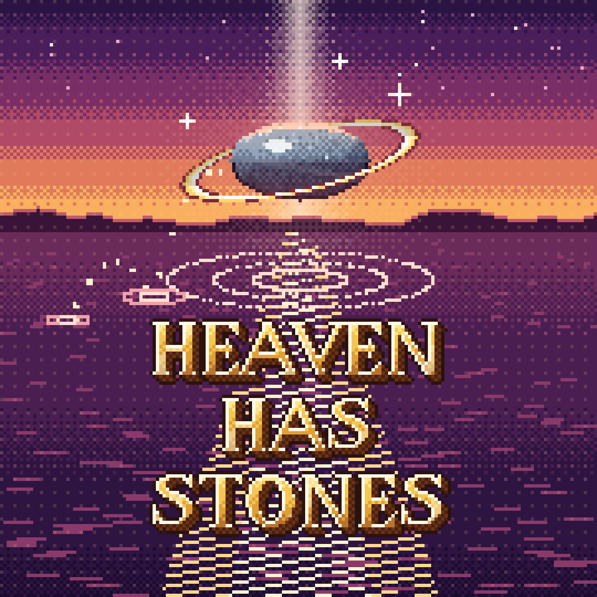

Your browser does not support the canvas tag.
Heaven Has Stones needs JavaScript.

Loading the pond...
To play it like an app: tap
Share
, then
Add to Home Screen
.
OK
Turn your phone sideways to play.